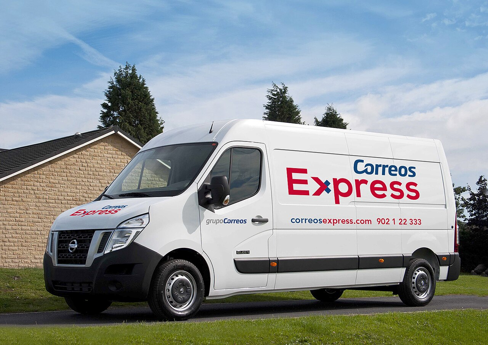

Máximo órgano
Consejo de Administración
El máximo órgano de decisión.
Qué vende, cómo se organiza, dónde opera y cómo le va en el mercado de paquetería.
Además del servicio postal universal, Correos ofrece servicios muy distintos a través de oficinas, carteros, web, apps y filiales. Sus 5.846 oficinas siguen siendo el punto de contacto más visible con el cliente.
| Línea de negocio | Ejemplos de servicios | Canal de venta o entrega |
|---|---|---|
| Correo y paquetería | Cartas, certificados, paquetes nacionales e internacionales | Oficinas, carteros, web y app |
| Paquetería urgente | Entrega en 24 h en España y Portugal | Filial Correos Express |
| Entrega flexible | Taquillas Citypaq, cambio de fecha y dirección | Citypaq y app Correos Modify |
| Servicios financieros | Correos Cash: sacar e ingresar efectivo | Oficinas y carteros rurales |
| Servicios para la Administración | Notificaciones, pago de tasas (Correos Pay), registro electrónico | Oficinas y carteros rurales |
| Comercio electrónico | Correos Market, tienda online de productores locales | Web market.correos.es |
| Telecomunicaciones | Infraestructura de telecomunicaciones | Filial Correos Telecom |
Informe Anual Integrado 2024 del Grupo Correos, pp. 8–9 y 27
De un vistazo: quién manda en Correos, qué hace cada dirección y en qué países opera el Grupo. En amarillo, las áreas que participan directamente en clasificar, seguir y entregar paquetes.

El Estado, a través de la SEPI, es dueño del 100 %. Por debajo están el Consejo de Administración, la Presidencia y un Comité de Dirección que se reúne cada semana. Por eso Correos actúa como empresa, pero también tiene que cumplir el servicio postal universal en todo el territorio.
Comercial consigue a las tiendas online, Operaciones clasifica y reparte, y Tecnología pone las PDA y el seguimiento. Correos Express hace lo mismo en urgente. El resto de direcciones da soporte: costes, precios, asesoría legal y relación con la Administración.
Durante más de 300 años Correos solo operó en España. Sus dos pasos fuera, ambos en 2019, apuestan por la paquetería: Portugal, para el reparto ibérico en 24 h, y China y Hong Kong, de donde llega buena parte del comercio electrónico.
Qué información hemos encontrado: Correos publica sobre todo su estructura directiva (el Comité de Dirección) y sus órganos de gobierno, pero no un mapa completo de departamentos. El Tribunal de Cuentas lo confirmó en su fiscalización del ejercicio 2022: Correos no tiene un documento aprobado que defina sus departamentos, sus competencias y cómo se relacionan.
Tribunal de Cuentas, Informe n.º 1.618, pp. 16–18
El máximo órgano de decisión.
Firma el mensaje del presidente en el Informe Anual 2024.
Formado por los directores generales; apoya al presidente.
Sociedad Estatal de Participaciones Industriales.
En febrero de 2024 el Consejo aprobó un nuevo Comité de Dirección con estas direcciones (El Español, 28/02/2024; fuente de prensa). Las funciones se completan con lo que describe el Tribunal de Cuentas.
| Dirección o área | Función | ¿Participa en clasificar, seguir y entregar paquetes? |
|---|---|---|
| Operaciones | Centros de tratamiento, transporte y reparto. Tiene subdirecciones de postal y paquetería, productos e internacional | Sí, es la principal. Clasifica en los 19 centros automatizados y reparte desde las 2.380 unidades de reparto |
| Organización, Tecnología y Transformación Digital | Sistemas informáticos, dispositivos, digitalización y organización interna | Sí. PDA de carteros, sistemas de seguimiento, web y apps |
| Comercial | Clientes, ventas, marketing y grandes cuentas | Sí. Firma contratos con tiendas online y ofrece Citypaq y opciones de entrega |
| Estrategia, Sostenibilidad y Marca | Estrategia corporativa, política comercial, comunicación y marca | En parte: define productos y precios con Operaciones |
| Financiera | Finanzas, costes e inversiones | En parte: aporta los costes para fijar tarifas |
| Servicios Jurídicos | Asesoría legal | No directamente |
| Secretaría General y Políticas Públicas | Consejo de Administración y relación con la Administración | No directamente |
| Filial Correos Express | Paquetería urgente en España y Portugal, con delegaciones propias | Sí. Clasificación y entrega urgente en sus delegaciones de España y Portugal |
El organigrama oficial en PDF está en el Portal de Transparencia de Correos, sección «Información organizativa».
El Grupo Correos opera sobre todo en España, con una filial en Portugal y participaciones en China y Hong Kong. Datos de 2024, del grupo salvo que se indique otra cosa.
| País o mercado | Quién opera | Actividad | Desde | Fuente |
|---|---|---|---|---|
| España | Correos (matriz), Correos Express y Correos Telecom | Servicio postal universal, paquetería, urgente y telecomunicaciones | 1716 | Informe 2024, p. 10 |
| Portugal | Correos Express Portugal (filial) | Paquetería urgente; reparto ibérico en 24 h | 2019 | Nota de prensa 05/04/2019 |
| China y Hong Kong | Participaciones en K Parcel y KCG eCommerce Solutions | Envíos de comercio electrónico hacia España y el mundo | 2019 | Informe 2024, pp. 24–25 |
| Resto del mundo | Correos como operador designado | Envíos internacionales por la red postal mundial (más de 660.000 oficinas) | — | Informe 2024, p. 56 |
Más de 300 años hasta salir fuera. La primera operación internacional de su historia llegó en 2019: Correos Express compró el 51 % de la empresa portuguesa Rangel Expresso y creó Correos Express Portugal, con unos 160 trabajadores y 12 instalaciones. El objetivo era ofrecer paquetería urgente integrada en toda la península ibérica.
Nota de prensa del Grupo Correos, 5 de abril de 2019

Acotamos el estudio a la paquetería de la marca Correos en España, con datos de 2023 a 2025. Dejamos fuera las filiales extranjeras (Portugal y China).
Es un mercado que ha cambiado mucho. En 2025 se enviaron en España 1.335 millones de paquetes, un 148 % más que en 2019, y solo 1.164 millones de envíos tradicionales (cartas, postales, notificaciones).
Correos domina el correo tradicional, con un 84 % de cuota, pero en paquetería solo tiene un 16 %, porque compite con muchas empresas privadas: el registro de operadores postales pasó de 1.765 a 4.565 empresas en diez años.
En 2025 los paquetes superan por primera vez a los envíos tradicionales.
Lidera las cartas, pero es un actor pequeño en el negocio que crece.